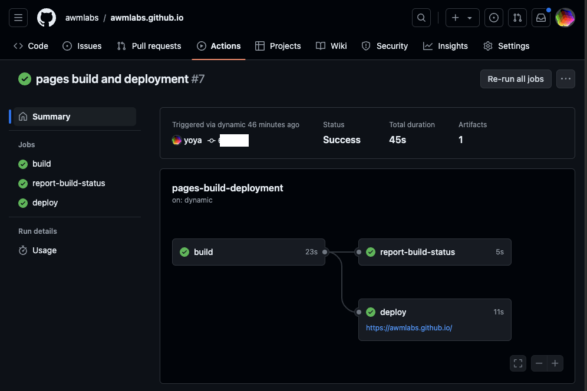
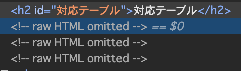

Blog 再開しました。
色々と罠にハマって Blog の記事が追加できなくなっていました。 以下にその罠の説明をします。
github.io の更新が反映されない
https://github.com/awmlabs/awmlabs.github.io/ に push すると、 https://awmlabs.github.io/ にページが反映されるはずですが、 ある時から、いくら push しても反映されなくなりました。
原因
https://github.com/awmlabs/awmlabs.github.io/ に push するファイルに、.git フォルダがあり、それに該当するレポジトリが消えていたからです。
hugo テーマに離島していた base16 のレポジトリが突然消えた事で、GitHub Actions が git clone エラーで止まってしまい、awmlabs.github.io に反映されなくなっていました。
GitHub の Actions メニューを見ればわかった事ですね。エラーがあれば、以下の画面でわかります。これは問題のない時の画面です。

hugo が動かない
hugo のバージョンを新しくしたら、メンテの止まっている base16 が使えなくなりました。 hugo-theme-base16 が同様のデザインなので、こちらに乗り換えました。
またレポジトリが消えて困る可能性を考えて、今度は fork した方を submodule 登録。
生 html が表示されない。
markdown の table は不便なので、HTML で記述していますが、そこが非表示になっていました。 実際のソースを見ると、以下のように DOM 展開されています。

config.toml に以下設定を追加すると回避できます。
[markup]
[markup.goldmark]
[markup.goldmark.renderer]
unsafe = truesearch が動かない
hugo-theme-base16 の不具合です。
-
https://github.com/awmlabs/hugo-theme-base16/blob/master/assets/js/search.js
-
https://github.com/awmlabs/hugo-theme-base16/commit/3db89e021eb89de119e3b351627b3b792530b6e7
- const { contents } = value.item;
+ const { content } = value.item;Fuse.search が返すオブジェクトの value.content を value.contents でアクセス する箇所があって、エラーで止まってました。
ちなみに、hugo-lunr で index.json を使っています。
recent posts が表示されない。
謎です。調査中。